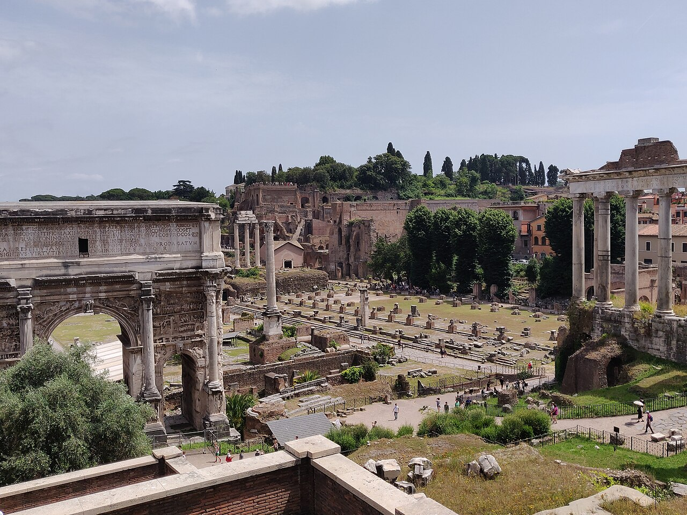
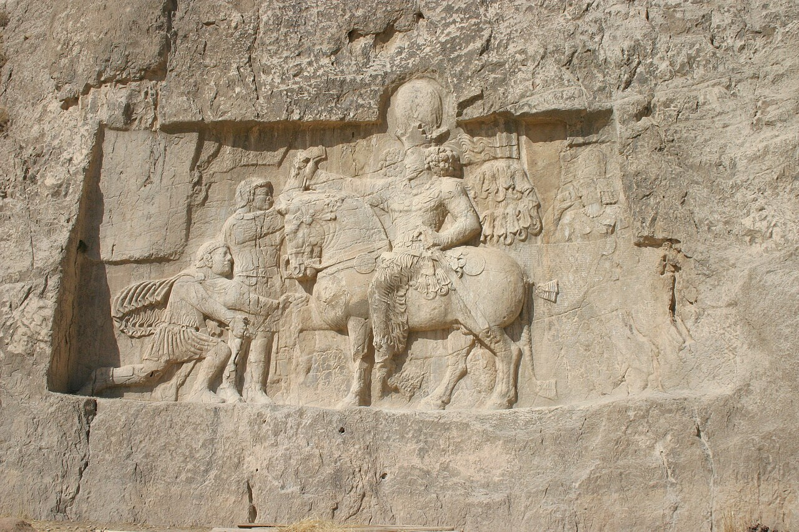
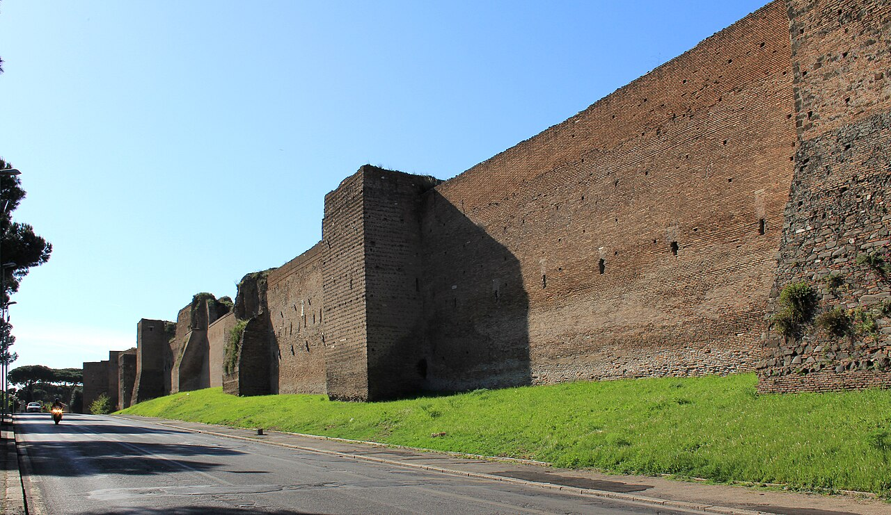
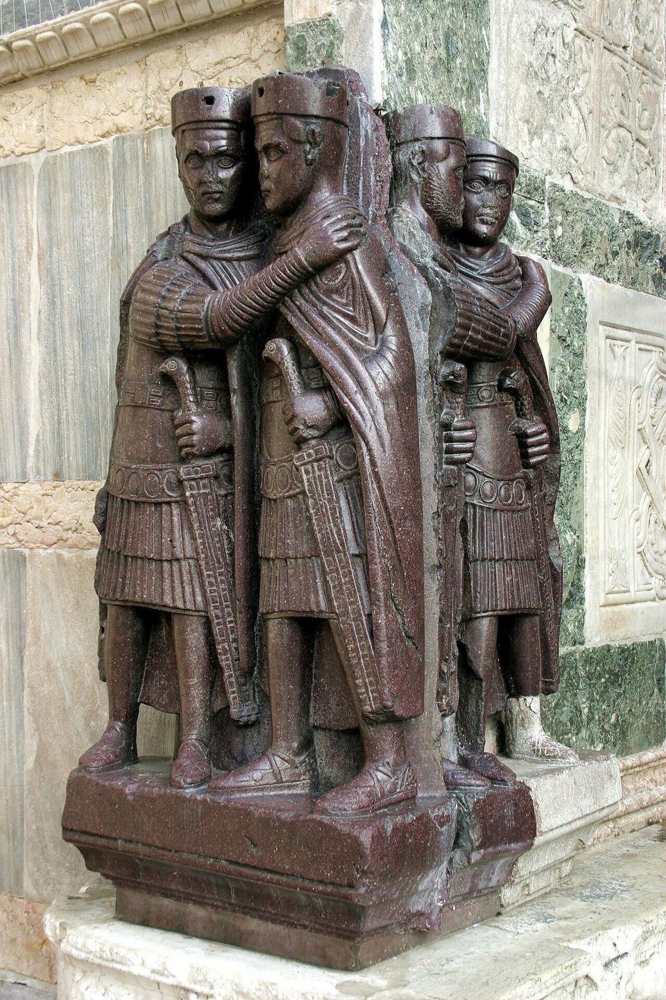
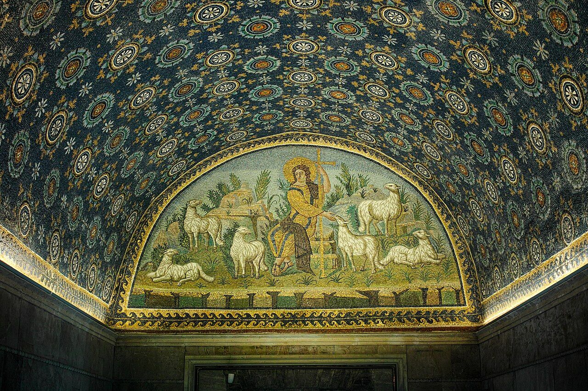
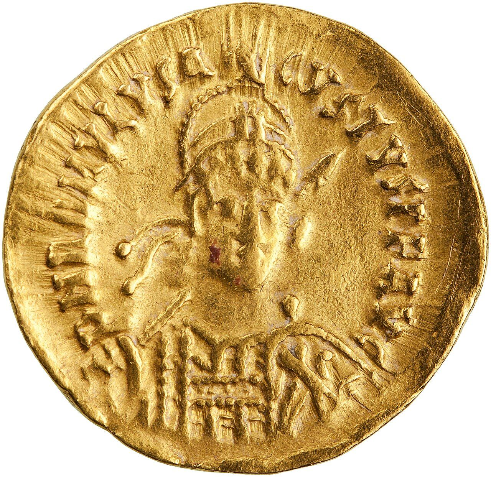
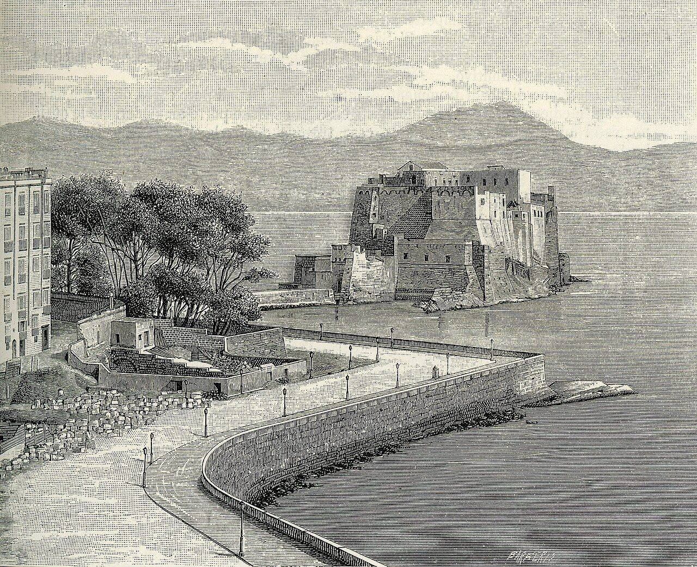
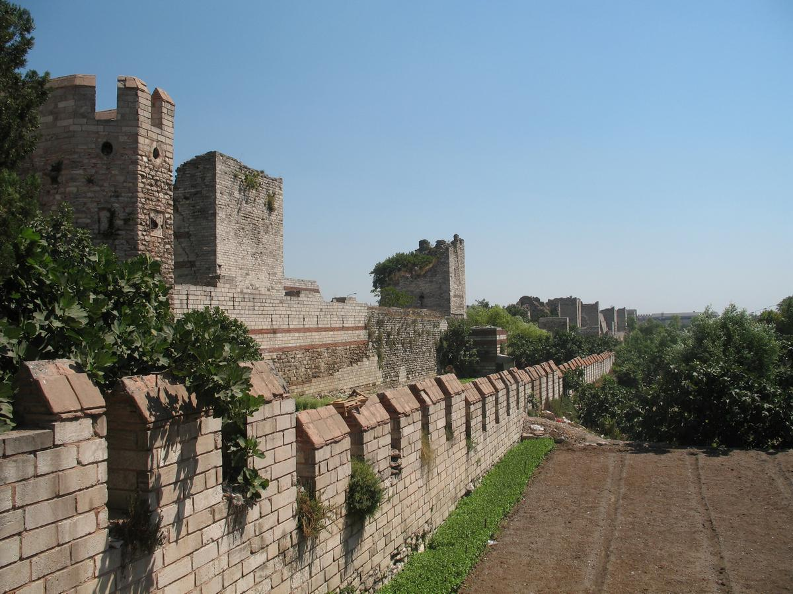

歴史・地理 History & Geographyローマ帝国は、 なぜ 滅びた？ 476年、西のローマ帝国の最後の皇帝は、殺されもせず、年金をもらって位を退きました。地中海を囲んだ大帝国は、ある日突然倒れたのではありません。200年あまりの流れを年表と地図でたどり、原因の候補を1枚の図に並べてみませんか。
2026.11.10 UP 約8分で読める 文：SOMOSOMO編集部
写真：ローマのフォロ・ロマーノ／Kurt Kaiser（2019年、CC0）
Previously
前回は、漢とローマがおたがいの存在を知っていた話でした。ローマは絹を通して、漢は甘英が聞いた話を通して。けれども、あいだにはパルティアやクシャーナ朝、インドの商人がいて、直接の使いのやりとりは確かめられません。166年ごろ、ローマでは疫病が広がり、漢は220年に滅びました。
イタリア北東の町ラヴェンナ、476年9月4日。西のローマ帝国の皇帝ロムルス・アウグストゥルスが、位を退かされました。まだ少年で、父の将軍が立てた皇帝です。名前は、ローマを建てたと伝わるロムルスと、初代皇帝アウグストゥスを合わせたもの。アウグストゥルスは「小さなアウグストゥス」というあだ名でした。
退かせたのは、ローマ軍の将校オドアケル。帝国の外の生まれで、土地を求めて反乱を起こした兵士たちを率いていました。オドアケルは少年を殺さず、毎年6,000ソリドゥス（金貨）の年金をつけて、南のナポリ近くの館へ送ります。
オドアケルは、自分では皇帝になりませんでした。ローマの元老院（有力者の会議）は、西の皇帝のしるしを東の都コンスタンティノープルの皇帝へ送り、皇帝は1人で足りると伝えます。西で新しい皇帝が立てられることは、もうありませんでした 。
この日を西の帝国の終わりとした記録で、知られている最も古いものは、6世紀の前半に、東の都の宮廷にいた人が書いた年代記です。当時の人々にとって、476年は大事件ではなかったのかもしれません。地中海をぐるりと囲んだ大帝国は、なぜ、こんなふうに静かに終わったのでしょうか。
In a word
内の争いと外の圧力が重なり、お金と兵が尽きた西 だけが崩れたから。
01
The Crisis
3世紀、 帝国は 内と外から 同時に揺れた
話は、240年ほどさかのぼります。235年、皇帝セウェルス・アレクサンデルが、自分の兵士たちに殺されました。ここから約50年、軍が自分たちの将軍を皇帝に立て、気に入らなければ倒す時代が続きます。のちに「3世紀の危機」と呼ばれる時代です。
外からも敵が来ました。第11話に出てきたパルティアは、224年に、同じイランから起こったササン朝ペルシアに倒されていました。新しい王朝はローマの東の領土にくり返し攻めこみ、260年には皇帝ウァレリアヌスが戦いに敗れて捕らえられます。戦いで敵に捕らえられた、初めてのローマ皇帝です。
北では、ライン川とドナウ川の向こうから、ゲルマン系の人々（いまのドイツのあたりやその東に住んでいた人々）が国境を越えて攻めこみました。260年代には、帝国の西のガリア（いまのフランスなど）と、東のシリアやエジプトが、それぞれ別の国として離れていきます。帝国は3つに割れました。

岩に刻まれた、ローマに勝った王 イランのナクシェ・ロスタムの岩に刻まれた、ササン朝の王シャープール1世がウァレリアヌスに勝ったことを記念する浮き彫りです。馬上の王の前に、ひざまずく人物が刻まれています。写真：Relief of Shapur I capturing Valerian ／Ali Ganjei（2007年、パブリックドメイン）
お金も傷みました。兵士に払う給料が足りず、皇帝たちは銀貨にまぜる銀を少しずつ減らしていきます。新しい銀貨が出るたびに値打ちが下がり、ものの値段は上がり続けました。251年ごろからは疫病も広がり（書き残した当時の司教の名から「キプリアヌスの疫病」と呼ばれます）、町によっては人口が大きく減っています。
270年には、ゲルマン系の人々が北イタリアまで攻めこみました。翌271年、皇帝アウレリアヌスは都ローマを囲む城壁を造り始めます。ローマは何百年も、町を囲む城壁に頼らずにすんできた町でした。兵を1人も割けず、工事の多くは町の人々に任されたといいます。

危機の時代の城壁 271年から275年にかけて造られた、ローマのアウレリアヌスの城壁の南の部分です。いまもローマの町の中に長く残っています。写真：Aurelian Walls Rome 2011 1 ／Karelj（2011年、パブリックドメイン）
アウレリアヌスは274年、3つに割れた帝国を1つに戻しました。けれども、その翌年には彼も暗殺されます。皇帝が短い間に入れ替わる混乱は、まだ終わりませんでした。
02
Divide to Defend
立て直しの答えは、 帝国を 分けて守ること だった
284年、東の軍に皇帝に立てられたディオクレティアヌスは、帝国を分けて守ることにしました。286年、仲間の将軍マクシミアヌスを同じ位の皇帝にして西を任せ、自分は東を受け持ちます。293年には、2人それぞれに副帝（次の皇帝になる助け役）を付けました。4人で治めるこのしくみを、四分統治と呼びます。
皇帝たちはローマを離れ、国境に近い町に住みました。都ローマは、しだいに皇帝のいない町になっていきました。

抱き合う4人の皇帝 300年ごろに、エジプト産の硬い紫の石（斑岩）で作られた4人の皇帝の像。いまはヴェネツィアのサン・マルコ大聖堂の角にあり、もとはコンスタンティノープルにあったとみられています。写真：Venice – The Tetrarchs 03 ／Nino Barbieri（2019年、パブリックドメイン）
305年、ディオクレティアヌスは自分から位を退きました。自分から退いた、初めてのローマ皇帝です。けれども、そのあと皇帝たちの息子が跡をめぐって争い、4人のしくみは長続きしませんでした。
争いに勝ち残ったのが、コンスタンティヌスです。313年に、1世紀にイエスの教えから生まれ、ときに迫害されながら帝国の中で広まっていたキリスト教を認め、自らも信者になった最初の皇帝とされます。
324年に帝国をふたたび1人でまとめると、黒海の入り口のボスポラス海峡に面したギリシャ人の町ビザンティオンを、新しい都に造り直しました。330年に完成を祝ったこの町は、彼の名をとってコンスタンティノープル（いまのトルコのイスタンブール）と呼ばれます。「新しいローマ」とも呼ばれた東の都です。
337年にコンスタンティヌスが亡くなると、帝国はまた、息子たちや、のちには兄弟の皇帝が東と西を分けて治めるようになります。分け方はそのたびに変わり、1人の皇帝がまとめた時期もありました。
395年、皇帝テオドシウスが亡くなると、2人の息子が東と西で皇帝になりました。兄のアルカディウスがコンスタンティノープルで東を、弟のホノリウスが西を治めます。この分け方が、ここで最後に固まります。建前では帝国は1つのままでしたが、テオドシウスは、東西の両方を実際に治めた最後の皇帝 になりました。
Fig.01 3世紀の危機から 476年まで
250 300 350 400 450
235– 3世紀の危機 軍が皇帝を立てては倒す。260年に皇帝が捕虜に、帝国は一時3つに割れる 284– 立て直し ディオクレティアヌスの四分統治。コンスタンティヌスが330年に新しい都を開く 337– 皇帝が並び立つ 息子たちの争いと分担がくり返される。376年にゴート人がドナウ川を渡る 395–476 東と西の皇帝 410年にローマが略奪され、476年、西で最後に立てられた皇帝が退く
見どころは、476年の「終わり」の前に、240年におよぶ長い坂道があること。帯の長さは年数に比例します。年は出典に挙げた各記事によります。
03
Across the Danube
川を渡った人々を、 帝国は 追い出せなかった
370年ごろ、東の草原から、馬に乗って暮らす遊牧民のフン族が、いまのロシアを流れるヴォルガ川のあたりに現れました。どこから来たのかは、いまもはっきりしません。フン族に押されて、黒海の北にいたゲルマン系のゴート人などが、西へ動き始めます。
376年の夏、大勢のゴート人が帝国の境のドナウ川にたどり着き、中に住ませてほしいと求めました。東の皇帝ウァレンスは、これを認めます。ゴート人を兵として雇い、軍を強められると期待したともいわれます。
ところが、受け入れはうまくいきませんでした。ローマの役人たちは配るはずの食べ物を横流しし、飢えたゴート人は反乱を起こします。378年8月9日、アドリアノープル（いまのトルコのエディルネ）の戦いで、ウァレンスは戦死しました。東の軍の3分の2が倒れたとされます。
ウァレンスの跡を継いだテオドシウス（395年に亡くなる、あの皇帝です）にも、ゴート人を追い出す力は残っていませんでした。382年、ゴート人はドナウ川の南に、自分たちの指導者のもとで住むことを認められます。名目は帝国の味方でした。
そのゴート人たちをまとめた王アラリックは、土地と地位を求めて西の宮廷とかけ合い、うまくいかないとイタリアに攻めこみました。そして410年8月24日、ローマの町に入り、3日間略奪します。ローマが外の敵の手に落ちたのは、800年近くぶりでした。
そのとき、西の皇帝ホノリウスはローマにいませんでした。402年に、沼に囲まれて守りやすいラヴェンナへ都を移していました。それでも知らせは帝国の東西を揺さぶり、東の都では3日間の喪に服しました。

西の宮廷が移った町の、星空の天井 ラヴェンナに残る、ガッラ・プラキディア廟の内部です。都が移って20年あまりのちの、425〜450年に建てられました。濃い青に金の模様を散らした天井と、入口の上の「よき羊飼い」のモザイクが見どころです。写真：Ravenna, Mausoleum of Galla Placidia 03 ／ArtProjection（2013年、CC0）
Fig.02 東西の境と、 ゴート人の 道すじ
西ローマ
東ローマ
ササン朝ペルシア
フン族
地中海
ドナウ川
ライン川
ローマ
コンスタンティノープル
ラヴェンナ
アドリアノープル
カルタゴ
5世紀の皇帝の都
古い都
そのほかの町
395年の東西の境（おおよそ）
ゴート人の移動（376〜410年）
見どころは、ドナウ川を渡ったゴート人が、東で戦ったあと、西のイタリアへ向かったこと。道すじと境はおおよそです。地図は Natural Earth（パブリックドメイン）から作りました。
04
West and East
同じ帝国でも、 崩れたのは 西だけだった
西にとって大きな痛手は、北アフリカでした。北アフリカは、兵をあまり置かなくても安全で、多くの税と、ローマを養う小麦を出す土地でした。
406年の終わりに、ゲルマン系のヴァンダル人などがライン川を越えて帝国に入りました。ヴァンダル人はスペインを経て、429年に北アフリカへ渡ります。そして439年、カルタゴ（いまのチュニジア）を奪いました。
税が減れば、兵を雇えません。西の宮廷はゴート人などの軍に頼るようになり、皇帝は、軍を握る将軍たちに立てられては退かされる存在になっていきました。476年、オドアケルが少年の皇帝を退かせたのは、その行き着いた先でした。


最後の皇帝の金貨と、送られた先 左は、ロムルス・アウグストゥルスの名を刻んだ金貨（ソリドゥス）。右は、ナポリの海辺の卵城（カステル・デッロヴォ）を描いた1894年の版画です。ロムルスが送られた館はこの場所にあったとされ、いまの城は12世紀以降に建てられました。写真：左 Gold Solidus of Romulus Augustulus ／アメリカ貨幣協会所蔵（475〜476年、CC0）、右 Napoli Castel dell Ovo ／ジュゼッペ・バルベリス（1894年、パブリックドメイン）
東は、ちがいました。コンスタンティノープルは、413年までに造られた、高さ12メートルの壁と、それより高い塔が並ぶ城壁（テオドシウスの城壁）に守られていました。5世紀の半ばにフン族の王アッティラが東の土地を荒らしたときも、城壁が都を守ります。
5世紀には、東の豊かな土地、つまり小アジア（いまのトルコのアジア側）、シリア、エジプトに、海を越えて大軍が攻めこむことはありませんでした。東の国境のササン朝ペルシアとも、この時代は短い戦いが2度あっただけでした。税を出す土地が残っていたので、東は兵を養い続けられました。

東の都を守った城壁 イスタンブールに残る、コンスタンティノープルの城壁（テオドシウスの城壁）です。低い外側の壁と、塔の並ぶ高い内側の壁が、二重になっているのがわかります。写真：Walls of Constantinople 1 ／CrniBombarder!!!（撮影年不明、パブリックドメイン）
ふり返ると、3世紀からの流れは一本の線でつながります。皇帝の座をめぐる争いが兵とお金をすり減らし、そこへ外からの圧力が重なった。東は豊かな土地と守りのかたい都で持ちこたえ、西は北アフリカを失って立て直せなかった、という流れです。
ただ、歴史家の答えは1つではありません。ドイツの歴史家デマントは1984年、滅びた理由として唱えられてきた説を、210も数え上げました。18世紀イギリスの歴史家ギボンは、キリスト教が忍耐を説き、人やお金が教会に流れたことも、衰えの一因として論じました（いまは重く見る歴史家は多くありません）。
ぶどう汁を鉛の鍋で煮詰めた甘味料で、人々の体に鉛の毒がたまったという説もありますが、多くの歴史家は重く見ていません。近年は、疫病や、寒くなった気候を重く見る研究も出ています。滅びたのではなく、ゆっくりと中世の社会へ形を変えたのだ、と考える歴史家もいます。
Fig.03 西の帝国が 崩れた 原因の候補
外からの圧力
ササン朝ペルシアの攻撃
フン族に押された人々が
国境を越えて入る
皇帝の座の争い
兵が皇帝を立て、倒す
内戦で兵と力を
すり減らす
お金と兵の不足
貨幣の銀が減る
北アフリカの税と小麦を
失い、兵を雇えない
東と西の差
東は豊かな土地が多く、
都の城壁もかたい
西だけが立て直せない
4つが重なり合う
西のローマ帝国が力を失う
476年、西で最後に立てられた皇帝が退く
見どころは、どれか1つではなく、4つが重なったこと。疫病や気候の変化を重く見る説など、ほかの候補もあります。図は、本文で見た主な候補をまとめたものです。
ギボンは、なぜ滅びたのかを問うより、これほど長く続いたことにこそ驚くべきだ、とも書いています。広すぎる帝国を、内の争いと外の圧力の中で、西は476年まで、東はそのずっと先まで保ち続けたのです。
05
By the Numbers
数字で見る 崩れていく帝国
26人 3世紀の危機の約50年に、皇帝を名のった人の数少なくとも。235〜284年。Crisis of the Third Century（Wikipedia）による
約 5% 271年ごろの銀貨（アントニニアヌス）にふくまれた銀の割合はじめは銀貨だった。刻印「XXI」を銀1：銅20と読む説による
9〜20万人 376年にドナウ川を渡って帝国に入った人の数いまの研究者による推計。Migration Period（Wikipedia）による
Here's the Fun Part
ここが面白い！「ビザンツ帝国」と 名のった人は、 1人もいなかった
教科書では、476年のあとの東のローマ帝国を「ビザンツ帝国」と呼ぶことがあります。都の昔の名、ビザンティオンからとった呼び名です。けれども、この名は帝国が終わったあとに付けられました 。広めたのは、16世紀のドイツの学者ヴォルフたちです。
そこに住む人々は、ギリシャ語を話すようになっても、自分たちを最後まで「ロマイオイ（ローマ人）」と呼び、国を「ローマ帝国」と呼び続けました。まわりの人々も同じで、トルコ語ではいまも、この帝国とその人々を「ルーム（ローマ）」と呼びます。
1453年、コンスタンティノープルはオスマン帝国に攻め落とされます。勝ったスルタン（君主）メフメト2世は、自分の称号に「ローマのカエサル（皇帝）」 を加えました。ローマの名は、都を落とした側にまで受け継がれたのです。
ローマ帝国は476年に滅びたのではなく、半分は1453年まで生きていた──と言うこともできます。教科書で「ビザンツ帝国」の文字を見かけたら、そこに住んでいた人たちの呼び方で「ローマ帝国」と読み替えてみてください。
To be continued
西で皇帝が立てられなくなったあとも、東のローマ帝国はコンスタンティノープルを都に続きました。その東では、ササン朝ペルシアがローマと争い続けます。そのはるか南、アラビア半島で7世紀に生まれた新しい教えは、100年ほどで大帝国を築きました。なぜ、そんなに速く広がれたのでしょうか。